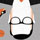

همانند بسیاری دیگر از مراکز دانشگاهی دنیا، سرویس دهندة Email دانشگاه زنجان مبتنی بر نرم افزار Qmail بوده و بر روی سرور Linux اجرا می گردد. مراکز دانشگاهی دنیا به طور معمول نرم افزارهای سرویس دهنده شبکه ای خود را از میان نرم افزارهای Open source انتخاب می کنند تا با توجه به در دسترس بودن متن برنامه قدرت مانور متخصصین IT در دانشگاه بر روی نسخة اجرایی فراهم گردد. با توجه به جایگاه مهم سرویس دهندة Email در دانشگاه، نرم افزار Qmail برای دانشگاه انتخاب شده است که نسبت به نرم افزارهای دیگر مانند SendMail دارای امنیت بالاتری می باشد.
همچنین برای دسترسی به Email از طریق Web، رابط نرم افزاری SquirrelMail انتخاب شده است که امکان دسترسی به Boxهای شخصی را از طریق Web به کاربران می دهد. با توجه به احساس نیاز کاربران دانشگاهی به دسترسی به Boxهای شخصی خود بوسیله ی نرم افزارهای (User Agent) مانند Outlook ، این امکان، از طریق پروتکل های IMAP و POP3 هم اکنون فراهم است.
با توجه به مزاحمت هایی که امروزه، هرزنامه های الکترونیکی ( Spam ) برای کاربران پست الکترونیکی ایجاد کرده است ، دانشگاه زنجان برای جلوگیری از ورود Spam از SpamAssassin و Qtrap استفاده می کند. لازم به توضیح است که هرزنامه ها یا همانSpam ، نسخه الکترونيکی از " نامه های بدرد نخور " است . واژه Spam به پيام های الکترونيکی ناخواسته ، اطلاق می گردد . اين نوع از نامه های الکترونيکی ارتباط مستقيمی با ويروس نداشته و حتی ممکن است پيام هائی که از منابع معتبر ارسال شده اند نيز در زمره اين گروه قرار گيرند .
نرم افزار SpamAssassin فعال می باشد و روزانه بیش از 3000 ایمیل مشکوک به Spam را دریافت می کند؛ آنهایی که احتمال Spam بودن آنها بالا است را به فولدری غیر از Mail Box افراد، ولی قابل دسترس و کنترل توسط Email administrator ، می فرستد و آنهایی را که احتمال Spam بودن آنها کمتر است را با اضافه کردن کلمه ی :SPAM: به ابتدای Subject ایمیل دریافتی، به Mail Box افراد می فرستد . البته قابل ذکر است، شما می توانید با ایجاد تنظیماتی این ایمیل ها را به Spam BOX خود منتقل کنید. نرم افزار Qtrap نیز فعال می باشدو احتیاج به تنظیمات از طرف کاربران ندارد و نحوه ی کار آن بدین صورت است که Spamهایی را که توسط SpamAssassin فیلتر نشده اند را با تکنیک ساده ی Bad Word Filter فیلتر می کند.
برای مبارزه با ویروس ها نیز از نرم افزار ClamAV استفاده شده است که داده های این نرم افزار هر روز از طریق اینترنت به روز می شود.
راهنمای تنظیمات Options
راهنمای تنظیملت Outlook Express جهت ارسال و دریافت ایمیل
راهنمای تغییر Password
راهنمای انتقال ایمیلهای Spam از MailBox
راهنما

کاربران ایمیل:
پست الکترونيکي دانشگاه در حال حاضر به اعضاي هيئت علمي و دانشجويان تحصيلات تکميلي سرويس مي دهد.
نحوه ی ایجاد اکانت ایمیل:
متقاضیان اکانت ایمیل می توانند با حضور در واحد انفورماتیک و پر کردن فرم مربوطه اکانت ایمیل داشته باشند.(بهمراه داشتن کارت دانشجویی برای دانشجویان الزامی می باشد)
زمان فعال بودن آن:
از آنجا که ایمیل های دانشگاهی به نمایندگی از آن دانشگاه می باشند و با خود مسایل سیاسی ، اجتمایی ، فرهنگی و نیز امنیتی اینترنت بهمراه دارند ، دانشگاه فقط در زمان وابستگی افراد به دانشگاه اکانتهای آنها را فعال خواهد داشت.
اکانت ایمیل